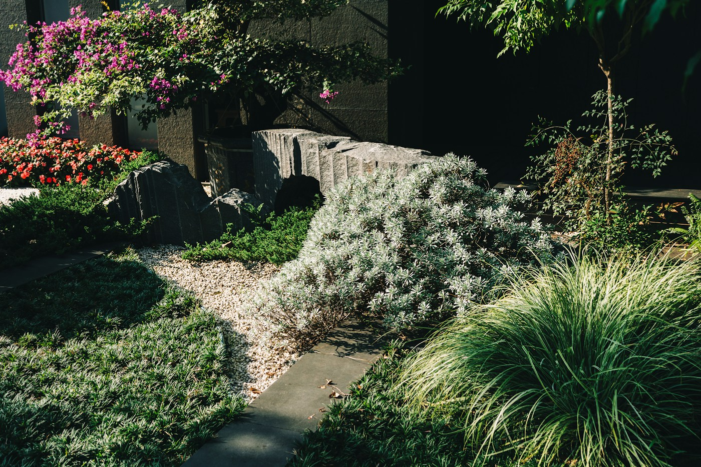
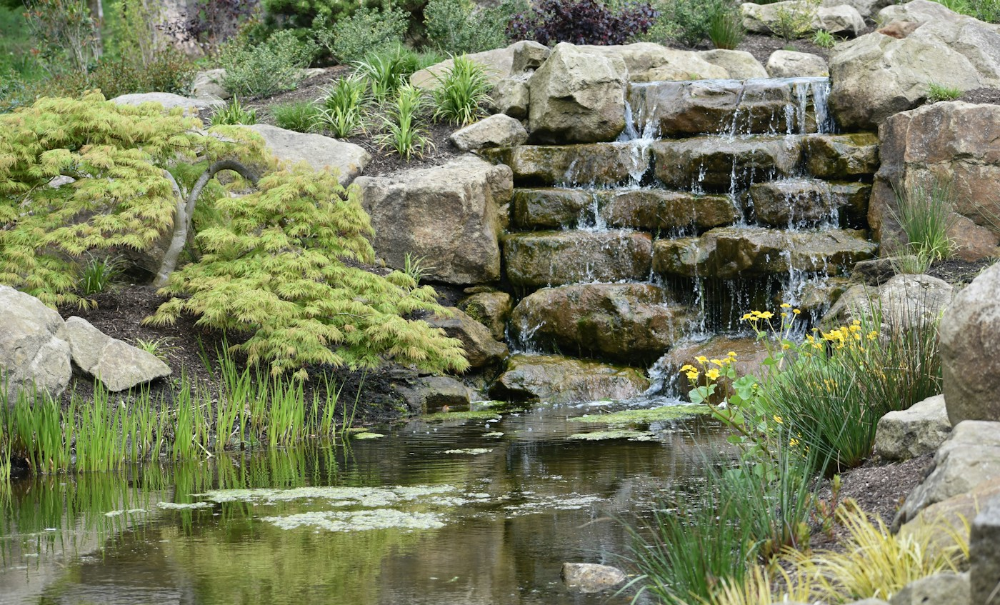
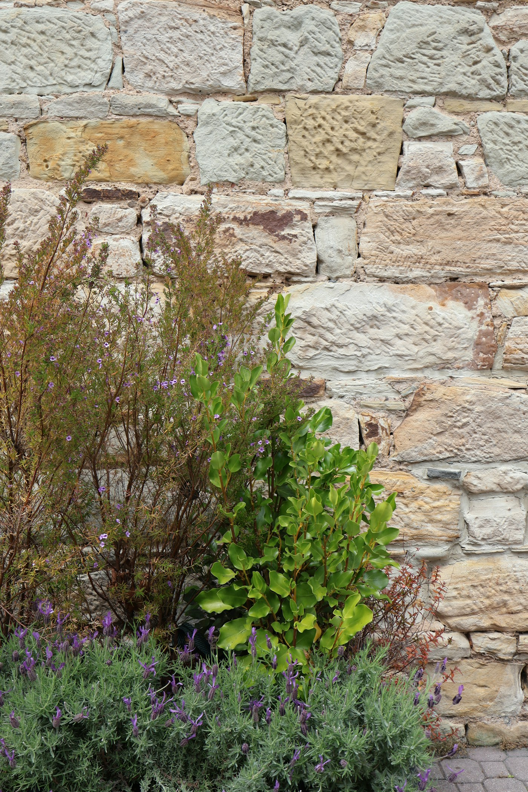
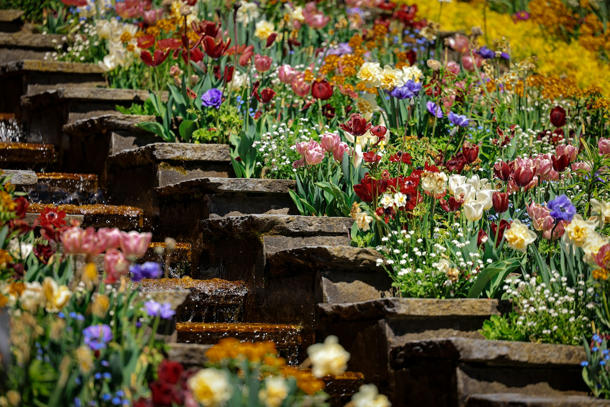

Steingärten
Steine, Kies und Pflanzen, die wenig Pflege brauchen.

Gartenbau und Gartenpflege in Niederglatt
Landscaping J. Duttweiler baut, verändert und pflegt Gärten. Mit Stein, Wasser und Pflanzen.
Gartenbau
Wir besprechen mit Ihnen, was Sie sich vorstellen. Dann bauen wir es.

Steine, Kies und Pflanzen, die wenig Pflege brauchen.

Natursteinmauern halten Hänge und gliedern den Garten. Sichtschutz gibt Ihnen Ruhe.
Vom Gartenteich bis zum Schwimmteich.
Ein Platz an der Sonne, ein Weg durch den Garten, eine Treppe am Hang. Aus Stein, Platten oder Kies.

Beete, Sträucher und Bäume. Für jede Jahreszeit.
Gartenpflege
Gärtnern entspannt. Aber nicht immer ist Zeit, Werkzeug oder das nötige Wissen da. Dann übernehmen wir die Arbeit, ganz nach Ihren Wünschen.
Der Betrieb
Jürg Duttweiler hat den Betrieb gegründet. Er arbeitet mit einem kleinen Team.
Jürg Duttweiler arbeitet sehr effizient und dadurch ist das Preis-Leistungsverhältnis fast unschlagbar. Er ist ehrlich, kreativ und geht auf die Wünsche der Kunden ein.
Kontakt
Rufen Sie an oder schreiben Sie eine E-Mail.